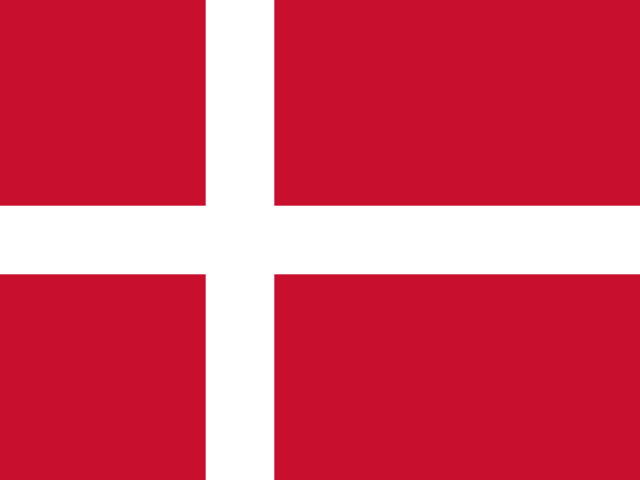

Haji Wright
| position | Forward |
| height | 6ft 3in | age: 23 |
| team | SonderjyskE |
| league |  Danish Superliga |
 SOCCER
TRACK
SOCCER
TRACK
|
Haji Wright
|
Danish Superliga Table

USMNT abroad: Haji Wright continues to score in Denmark
Haji Wright is off to a great start in Denmark with five goals in six appearances. This and more in the USMNT abroad weekend recap.

Weekend Focus: Haji Wright can't be written off anymore 11/21/2020
For many players, 2020 has been challenging during the COVID-19 pandemic. Games are never guaranteed to be played, players are getting sick, and leagues ...

Former LA Galaxy academy standout, US youth international Haji Wright signs with reigning Danish Cup champions
TRANSFER TRACKER STATUS: Signing. Former LA Galaxy academy standout Haji Wright has signed with SonderjyskE Fodbold in the Danish Superliga, the ...
  Buy USMNT apparel
03/21/2021 Nordsjaelland 2 - 1 SonderjyskE03/14/2021 SonderjyskE 2 - 0 AC Horsens03/08/2021 Aalborg 1 - 0 SonderjyskE03/01/2021 SonderjyskE 1 - 4 Lyngby02/21/2021 Aarhus 2 - 0 SonderjyskE02/15/2021 FC Copenhagen 3 - 2 SonderjyskE02/07/2021 SonderjyskE 0 - 1 Vejle BK12/20/2020 SonderjyskE 0 - 1 Randers Freja12/13/2020 Brondby 2 - 1 SonderjyskE12/06/2020 SonderjyskE 2 - 1 Nordsjaelland11/29/2020 SonderjyskE 1 - 3 FC Copenhagen11/08/2020 AC Horsens 0 - 3 SonderjyskE11/02/2020 SonderjyskE 1 - 1 Aarhus10/25/2020 Randers Freja 1 - 2 SonderjyskE10/18/2020 SonderjyskE 2 - 0 Brondby10/04/2020 Lyngby 2 - 2 SonderjyskE09/27/2020 SonderjyskE 3 - 1 Aalborg09/24/2020 Viktoria Plzen 3 - 0 SonderjyskE09/20/2020 Vejle BK 4 - 1 SonderjyskE09/11/2020 SonderjyskE 2 - 0 Midtjylland |
||||||||||||||||||||||||||||||||||||||||||||||||||||||||
| Tweets by SEfodbold | |||||||||||||||||||||||||||||||||||||||||||||||||||||||||
| Club | Season | League | Cup | Europe | Total | |||||
|---|---|---|---|---|---|---|---|---|---|---|
| Division | App | Goal | App | Goal | App | Goal | App | Goal | ||
| New York Cosmos | 2015 | NASL | 3 | 0 | 1 | 0 | – | 4 | 0 | |
| Schalke 04 | 2016–17 | Bundesliga | 0 | 0 | 0 | 0 | 0 | 0 | 0 | 0 |
| 2018–19 | Bundesliga | 7 | 1 | 0 | 0 | 0 | 0 | 7 | 1 | |
| Total | 7 | 1 | 0 | 0 | 0 | 0 | 7 | 1 | ||
| SV Sandhausen (loan) | 2017–18 | 2. Bundesliga | 15 | 1 | 0 | 0 | – | 15 | 1 | |
| VVV-Venlo | 2019–20 | Eredivisie | 22 | 0 | 1 | 1 | – | 23 | 1 | |
| SønderjyskE | 2020–21 | Danish Superliga | 15 | 7 | 3 | 1 | 1 | 0 | 19 | 8 |
| Career total | 62 | 9 | 5 | 2 | 1 | 0 | 68 | 11 | ||